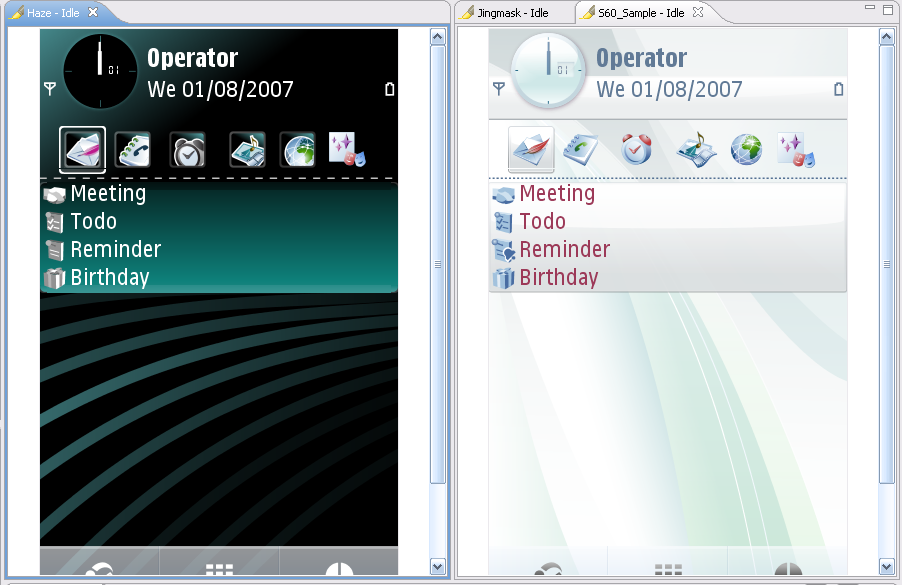

Tiling Editors
Carbide.ui allows you to
have multiple themes open in multiple editors. However, you can tile
editor sessions within the editor area, in order to view multiple
themes side by side.
- With two or more themes open
in the editor area, select one of the editor tabs.
- Holding down the left mouse
button, drag that editor over the left, right, top or bottom border of
the editor area. Notice that the mouse pointer changes to a "drop cursor"
that indicates where the editor session will be moved when you release
the mouse button.
- (Optional) Drag the borders
of the editor area or each editor, to resize as desired.
This is a similar operation to
moving and docking views inside the tool , except that all editor
sessions must be contained within the editor area.

Figure: Tiling multiple themes
in editor